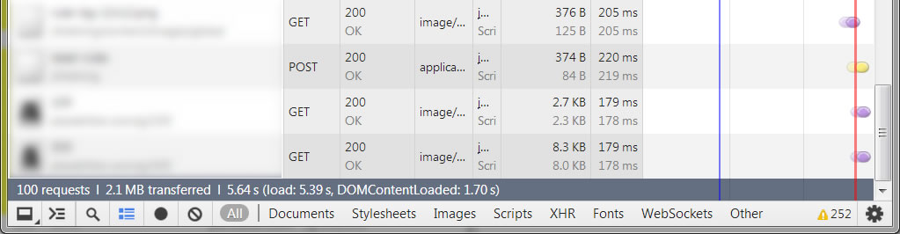
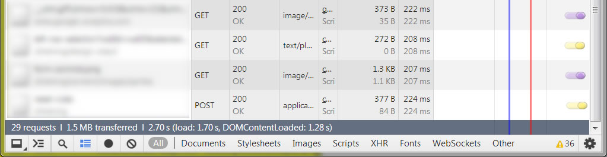

The title of today’s session is:

You can’t do that in Javascript!
Why are we here?
- Because Javascript = serious business
- To dispel some misconceptions
- To show you some patterns, libraries, and tools to help you make bigger, better Javascript programs.
Some quick facts
- According to the TIOBE Programming Community Index, Javascript is one of the top 10 most in-demand programming languages based on an aggregate of web searches.
What things have you heard about Javascript?
- It’s just a scripting language
- It’s slow
- It’s badly designed
- It lacks object-oriented capabilities
“The first versions of JavaScript were quite weak. They lacked exception handling, inner functions, and inheritance. In its present form, it is now a complete object-oriented programming language. But many opinions of the language are based on its immature forms.”– Douglas Crockford
A short history of Javascript
- Javascript 1.0 – March 1996 – Netscape 2.0
- Javascript 1.3 – October 1998 – a.k.a. ECMA-262
- Javascript 1.5 – November 2000 (ECMAScript 3)
- ~2001-2008 – “Javascript 2.0” (ECMAScript 4)
ECMAscript 4 failed
- Too many proposals, too little agreement.
- Actionscript 3 is similar to what ECMAScript 4.0 might have been.
- To get ready for ECMAScript 4, browser manufacturers defined
class,export,import,enum,extends, andsuperas “future use reserved words”. We can’t useclassas a variable name in Javascript, but we can’t create classes either. -
ECMAScript 5, a scaled back subset of ECMAScript 4, was released in 2009.
- Built-in support for JSON, some useful
ObjectandArraymethods
- Built-in support for JSON, some useful
The future
- ECMAScript 6 / “Harmony” is scheduled for completion in December 2013… but we’ll see
- Should include support for
- Classes
- Interfaces
- Modules
- Synchronous and asynchronous dependency management
What can we do now?
-
Transpiling / metalanguages
- Traceur compiler
- CoffeeScript
- TypeScript
-
Dependency management
- CommonJS (Node.JS modules)
- Asynchronous Module Definition (Require.js)
- Emulate classic OO structures using currently-supported patterns
4½ Useful Patterns
Review of OO Terminology
- Class
- Object
- Module / package
- Property
- Method
- Inheritance
- Polymorphism
Pattern 0: Closure
- Javascript has function-level scope. Properties declared with the
varkeyword are scoped to the function in which they’re called.var myNumber = 1; function test() { var myNumber = 2; }; test(); console.log(myNumber); - What will the
console.logoutput?
Pattern 0.5: IIFE
- IIFE (Pronounced “iffy”) = Immediately invoked function expression
- An IIFE is a function that declares and immediately calls itself:
(function() { // Doin' thangs }()); - Why the extra braces?
Pattern 0.5: IIFE
- IIFE is the building block of the rest of the patterns we’re going to see
- The general plan:
- Create an IIFE / closure as a container
- Fill it with variables and methods
- Return a single namespaced object (a module, a class) to the global scope
- ???
- Profit
Pattern 1: Module
- A module is a closure that returns a single, namespaced
object. We can attach properties and methods to the object. - Module methods and properties are static. We assume there’s only one instance of a module in memory at any time.
- Useful for bringing several loosely related or unrelated functions into a single namespace.
Examples:
- A section controller with a method per page
- A utility library
Pattern 1: Module
(function() {
var module = {};
var privateMethod = function() {
console.log('Go away, I\'m private!');
};
module.doSomething = function() {
console.log('I\'m helping!');
};
module.doSomethingElse = function() {
privateMethod(); // Calls a method private to the closure
};
// Export the module into global scope
window.myModule = module;
}());
// Call the module from somewhere else
myModule.doSomething();
myModule.doSomethingElse();
Pattern 2: Class
- A class is a closure that returns a single, namespaced
function(a constructor) which may contain many public and private functions and properties. - Class methods and properties can be instanced or static. There can be many instances of a class at one time and they can all have their own property values.
- When creating a class, we attach instance methods / properties to the object's
prototype.
Pattern 2: Class
(function() {
// Can't use "class" because it's a reserved word in Javascript
var module = function() {
console.log('This is the constructor');
};
// Static methods and properties
module.staticMethod = function() {
console.log('I\'m a static method!');
};
module.staticProperty = "STATIC";
// Instance methods and properties use prototype
module.prototype.instanceMethod = function() {
console.log('I\'m an instance method!');
};
module.prototype.instanceProperty = "INSTANCED";
// By convention, classes are TitleCase
window.MyClass = module;
}());Pattern 2: Class
- Create an instance of a class with the
newkeyword.
// Create a new instance
var mc = new MyClass();
// Calling static methods
MyClass.staticMethod();
console.log(MyClass.staticProperty);
// Calling instance methods
mc.instanceMethod();
console.log(mc.instanceProperty);Extending a Class
- Javascript lacks true classical inheritance
- What it has is prototypal inheritance
- Object A can make Object B its prototype. That gives it access to all of Object B’s methods and makes it an instance of Object A (polymorphism).
- HBS library has an extend method that makes this simple
-
var module = HBS.extend(APP.MyClass, function() { this.init(); });
Extending Gotchas
- Use
.call(this)when calling_supermethods from a child class. - On older browsers, we have to create an instance of an object to extend it, so avoid
console.logor interacting with the DOM in the constructor.
Pattern 3: Singleton
- A Singleton is a class that can only have one instance at any given time.
- Use a Singleton when you need multiple classes to safely share a single object regardless of load order.
- Trying to construct a Singleton with the new keyword returns an error.
- Instead we use static
getInstance()method to create or return the instance of the Singleton.
Pattern 3: Singleton
(function() {
var singleton = function () {
throw new Error('Use MySingleton.getInstance()!');
};
var init = function() {
// The init method creates the inner class instance
var module = function() { };
module.prototype.doSomething = function() {
console.log('I\'m a Singleton!');
};
return module.prototype;
};
singleton.getInstance = function () {
this.instance = this.instance || init();
return this.instance;
};
window.MySingleton = singleton;
}());Pattern 4: Widget
- A widget is a class that operates on or attaches functionality to DOM elements
- Takes a DOM element or a jQuery selector as an argument
- Has default behavior that can be modified by passing an options object
- Exposes callback methods so that other parts of the program can respond to events thrown and handled by the plugin
- Bonus: Attaches a reference to itself (as a data-attribute) to the DOM element
Pattern 4: Widget
(function() {
var module = function(target, options) {
var instance = this;
return $(target).each(function() {
instance.init(this, options || {});
});
};
module.prototype.defaults = {
color: '#f00'
};
module.prototype.init = function(target, options) {
this.options = $.extend({}, this.defaults, options);
this.domElement = $(target);
this.domElement.data('widget-mywidget', this);
// This is just a sample of what you might do with a widget
this.domElement.css(this.options);
};
window.MyWidget = module;
}());Introducing HanBootstrapper
HanBootstrapper
- HBS (HanBootstrapper) is a helper library for creating and working with Javascript code modules.
- It has helper functions to help you create and namespace your code, and also a mechanism for bootstrapping multi-page web applications.
- It’s not quite a framework, more of a utility.
- Two new Git repos are available to help you use HBS on your projects.
HBS Standard
- HanBootstrap Starter Standard - for most projects: http://stash.hansoninc.local:7990/projects/HPI/repos/
hanbootstrap-starter-standard/browse - Replaces the old hanson-frontend-boilerplate repo
- Contains examples of the 4 patterns we've reviewed
- Has utilities for bootstrapping code on a multi-page site
- Doesn’t take care of dependency management
Bootstrapping with HBS
-
For bootstrapping to work, you need to have loaded three Javascript modules:
hbs.js- A global JS file (usually
main.js) - An optional section controller, e.g.
mysection.js
-
Main.js initializes all the Javascript that needs to run on every page of the site, and then calls
HBS.initPage().$(document).ready(function() { module.init(); HBS.initPage(); });
Bootstrapping with HBS
-
HBS.initPage() looks for two data attributes attached to the
bodyelement:<body data-section="APP.sections.mySection" data-page="myPage"> - HBS attempts to find a loaded JS module matching
data-section(e.g.APP.sections.mySection). If that module exists, HBS checks it for a method calledinit(). This method is assumed to contain any setup code for the entire section and is run if found. - Next, HBS tries to run a method corresponding to
data-page, e.g.APP.sections.mySection.myPage().
Bootstrapping gotchas
- By default, HBS doesn't actually load any Javascript. You still need to do that using
<script>tags.- There is an experimental autoloading feature, but it has not been tested and may snatch
yo' people up. Check
hbs.jsfor more information and use with caution.
- There is an experimental autoloading feature, but it has not been tested and may snatch
yo' people up. Check
- There is not a 1:1 correlation between your class names and your file names.
Your file path might be
APP/sections/mysection.jsbut the class might beAPP.sections.mySection. - If you want to be a real rockstar, use HBS/Require.js
HBS/Require.js
- http://stash.hansoninc.local:7990/projects/HPI/repos/
hanbootstrap-starter-Require.js/browse - Does everything HBS does but also introduces Require.js for dependency management
- Has Require.js compilation enabled so you can deploy a pre-built version of your JS.
Bootstrapping with Require.js
- Require.js will load your main JS and your section controller for you automatically:
<script data-main="js/APP/main" src="js/lib/require.js"> - Bootstrapping looks slightly different:
<body data-section="APP/sections/mySection" data-page="myPage">
Dependency management
Why dependency management?
“[D]ependencies are very weakly stated: the developer needs to know the right dependency order. For instance, The file containing Backbone cannot come before the jQuery tag.”
- Discrete classes = looser coupling, better maintainability and encapsulation
- The more classes you have, the more likely you are to run into out-of-order dependencies
- Script tags are not a dependency management strategy
Some popular methods
- CommonJS modules
- Developed as part of a larger project to separate Javascript from the browser
- Popular implementation is Node.JS modules
- Synchronous
- Not particularly browser-friendly
- Asynchronous Module Definition (AMD)
- Developed to address shortcomings in CommonJS modules
- Popular implementation is Require.js
- Asynchronous, well-suited for web use
- We’ve used it successfully on projects such as HGTV Admin, Menards Shelving, Design EyeQ
About Require.js

“Require.js is a JavaScript file and module loader. It is optimized for in-browser use, but it can be used in other JavaScript environments, like Rhino and Node. Using a modular script loader like Require.js will improve the speed and quality of your code.”
- Require.js helps you manage dependencies so you don’t have to worry about the order in which scripts are loaded
- Has a powerful build process so you can deploy pre-built versions of your script to production.
About Require.js
- Require.js has two basic methods,
require()anddefine(). require()loads scripts asynchronously based on a slash-separated path, like this:require("APP/controllers/main");define()exports Javascript modules in such a way that require can keep track of them. Require.js keeps a registry of modules it’s already loaded, so if you need a class more than once it isn’t loaded multiple times.
What if my code isn’t in AMD format?
-
No problem. Require.js’s config file allows you to shim non-AMD Javascript. Shimming looks like this:
shim: { 'lib/jqueryui': { deps: ['lib/jquery'] } } - Now I can
require('lib/jqueryui')in my classes, and it will added the AMD registry. - Even cooler, I can shim dependencies to make completely sure all the pre-reqs get loaded first.
Loader Plugins
“Require.js supports loader plugins. This is a way to support dependencies that are not plain JS files, but are still important for a script to have loaded before it can do its work. The Require.js wiki has a list of plugins. This section talks about some specific plugins that are maintained alongside Require.js:”
- Example, The text loader plugin:
require('text!templates/applyProducts/_products-line.hbs'); - This plugin can be used to load plain text files into a Javascript variable. The Design EyeQ team used it to load Handlebars templates.
Other Plugins
- Other plugins include resource bundles (i18n), order (force scripts to load in a order, shouldn’t be necessary if you have a proper shim config), JSON, web fonts, images, and more:
https://github.com/jrburke/Require.js/wiki/Plugins
Building and Deploying Require.js
- The Require.js optimizer combines related scripts together into build layers and minifies them with UglifyJS or Closure Compiler.
- It scans your
require()statements, loads all the dependencies and inlines them into the top of the file. Then it minifies everything and outputs it to a directory of your choosing (we preferjs-built). - This makes it trivial to select the
/content/jsdirectory (for dev) or/content/js-built(for staging and production). Nothing else needs to change in your code or your config!
Speed Improvements
-
Unbuilt JS:
 -
Built JS:

Building and Deploying Require.js
- The Require.js optimizer can be run with node or with Rhino for Java. Node is much, much faster. On Menards Shelving, the Require.js build takes ~60 seconds locally with Node, but over 10 minutes(!!) when run as part of the build using Rhino.
- To improve performance, set
skipDirOptimize: true, and minify your third-party JS libraries some other way.
Build config file – modules
- The “classic” scenario for the Require.js optimizer is a single-page app, where one Javascript rules them all, but it can be made to work on a multi-page app too. To do this we need to set up different levels of modules:
-
modules: [ // First set up the common build layer. { // Corresponds to main.js name: 'main' }, // Now set up a build layer for each main layer, but exclude // the common one. { // Corresponds to APP/controllers/section1.js, excludes // anything previously included in main.js name: 'APP/controllers/section1', exclude: ['main'] } }
Documentation with JSDoc
About JSDoc
- You can generate HTML documentation for Javascript using JSDoc.
- JSDoc 3.0 runs in Node.js and can be installed with npm (more on this in a bit).
- Syntax is very similar to Javadoc.
- Once installed, navigate to where your JS files are located in a terminal and run this command:
jsdoc -r *
JSDoc Syntax
- Any comment beginning with
/**is interpreted as a JSDoc comment. There are many tags beginning with@that help make your docs better./** * @constructor * @alias MEN.ui.configurator.VizProduct * @extends MEN.ui.configurator.VizItem * @classdesc A component of a design, such as a shelf, basket or upright. VizProducts can be manipulated and resized * by users and can have rules applied to them. */ - There are lots of ways to document common patterns.
- Our front-end dev templates have examples of how to document the four patterns we learned today.
Build Tools
Node.js and NPM
-
 Node.js is a standalone Javascript runtime based on Google’s V8 engine. It can be used to build web servers and other networky things.
Node.js is a standalone Javascript runtime based on Google’s V8 engine. It can be used to build web servers and other networky things. - I know virtually nothing about Node in that capacity, but I do know that it is the must-have command line tool for the serious Javascript developer.
- Node and its sister tool npm are the foundation for many other totally sweet JS tools.
NPM
-
 NPM is a package manager for node. You might think it stands for “Node package manager”, but you would be wrong. According to the author:
NPM is a package manager for node. You might think it stands for “Node package manager”, but you would be wrong. According to the author: “Contrary to the belief of many, "npm" is not in fact an abbreviation for "Node Package Manager". It is a recursive bacronymic abbreviation for "npm is not an acronym".”
NPM
-
Lots of cool and very smart people publish Node JS modules to the NPM registry. Once you have installed Node and NPM, you can do things like this from the command line:
That will install underscore to the current folder.npm install underscore -
You can install things globally like so:
npm install -g bower
Grunt
-
 Grunt is a Node-based task runner. It’s broadly similar to ant, or
make, or rake or cake.
Grunt is a Node-based task runner. It’s broadly similar to ant, or
make, or rake or cake. - Here are some things Grunt can do:
- Lint and minify your JS
- Compile a LESS file to CSS
- Copy assets from one folder to another
- Build HTML files by compositing together templates
- Start a local web server with live reload
- Run unit tests
- Generate documentation
- Seriously, the list of gruntJS plugins is disgustingly long: http://gruntjs.com/plugins
Installing Grunt
-
You can start working with GruntJS by installing the
grunt-clinpm package:npm install -g grunt-cli - Now you can run the grunt command from any directory. Grunt will look for a file called
Gruntfile.jsto tell it what to do next.
Grunt, continued
- Our new front-end dev templates have some Grunt plugins preconfigured. We also have a wiki article that has info about downloading and installing grunt.
- In conclusion, Grunt is super awesome. Warren will be giving a presentation on some of the specific plugins we’ve been using and how Grunt has transformed our workflow in the near future.
Bower
-

“Bower is a package manager for the web. It offers a generic, unopinionated solution to the problem of front-end package management.”
-
Bower can be used to add specific libraries to your site, including Bootstrap, jQuery, jQuery UI, and many others. Install it like this:
npm install -g bower
Bower
-
Now you can install packages like this:
bower install jquery -
If you want a specific version of a plugin, it looks like this:
bower install jquery#1.9 - You can configure Bower with a little JSON file called
.bowerrc. The only useful setting I see is the directory setting to control where Bower puts your various things. - A directory of everything you can install with Bower is here: http://sindresorhus.com/bower-components/
Yeoman
-
 Yeoman is a project scaffolding system. It can give you a fresh HTML5 boilerplate or Bootstrap scaffolding.
Yeoman is a project scaffolding system. It can give you a fresh HTML5 boilerplate or Bootstrap scaffolding. - Install Yo like so:
npm install -g yo - To use Yeoman, you install various generators.
A generator is a template for creating an application, like a Bootstrap 3 app or an AngularJS app. - Here is a very long list of generators: http://yeoman.io/community-generators.html
Yeoman
- Let’s say I want a fresh Bootstrap application. I open up my console, navigate to my project’s root directory, and type this:
yo bootstrap - Yeoman asks me some questions and generates a scaffolding.
- Fun fact, Yeoman uses Bower to grab and install libraries, so if you have a
.bowerrcfile set up for your project, Yeoman will place dependencies there.
What did we learn?
- A little about Javascript, its past, present and future
- Some patterns for emulating classical object-orientation in Javascript
- Two new starting points for developing multi-page applications
- Some interesting build tools to make your life easier